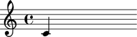

show( )
The show( ) helper is one of the most used helpers in Abjad. It is the link between your Abjad code and LilyPond. show(expr) calls LilyPond to render the given Abjad expression expr and immediately displays the score as a PDF.
Here's a simple example:
abjad> n = Note(0, (1, 4)) abjad> show(n)
Note that show(expr) only works when expr.format exists.
All Abjad objects divide into roughly two groups:
- Components
- Spanners
MetricGrid.
Spanners are special in that they do not implement a 'format' string, so they can not be passed to show( ) directly.
Instead, apply a spanner to a Component and then show( ) the Component.
Here's an example:
abjad> staff = Staff(scale(4)) abjad> b = Beam(staff)
Beam b is a Spanner, so passing b to show( ) will throw and exception. Instead, pass staff to show( ) and you will see the notes in the staff with the Beam spanner applied.
abjad> show(staff)